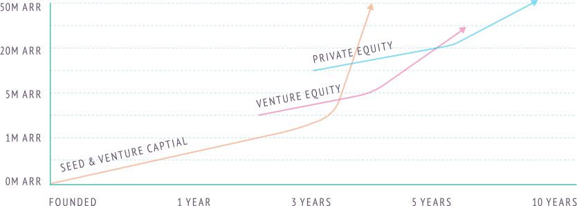

Venture Equity: A new model for investing
We raised Scaleworks Fund I, a $50m first fund, and called it ‘Venture Equity’.
Below are some notes on what we mean by the term Venture Equity and where we see
it in the world of equity finance.
Scaleworks coined the term Venture Equity - and manages a $58m Fund I to invest on the venture equity thesis. Essentially that means Scaleworks will invest for controlling stakes in B2B SaaS companies and operate them for high-growth. Venture Equity sits at the intersection of venture capital and private equity. Where the venture capitalist succeeds by getting outsized returns on a very small number of their investments, and the private equity fund acquires proven businesses with upside from smart financial engineering and operational discipline; venture equity takes the VC interest in growth opportunities, with the private equity focus on already proven businesses.

Venture Capital funds (including angels and seed funds) invest in startups with high growth opportunities in a large addressable market. Basically — startups that have the possibility of becoming large businesses. Most VCs lose money in 5 out of 10 deals, get their money back maybe with a small interest rate equivalent return in 2 of 10, and 1 in 10 or 1 in 20 return their entire fund (the successful ones return a multiple of their fund on a single deal!). Venture capital has been the enabler of many technologies we use today — we owe them a debt of gratitude for fueling so much innovation. The thing with raising venture capital though is that it’s very much a zero sum game and many businesses that could have thrived over time, get pushed to grow too fast and find a large addressable market. For the VC — this is okay — the mantra is ‘shoot for the stars or die trying’. But with more and more VC funds emerging, the bar for ‘potentially a big business’ seems to have been lowered. The net result is — lots of companies that probably shouldn’t have raised VC, that would be good businesses given time, end up pivoting and broadening their view rather than winning their niche.
VCs expect failure most of the time. They plan for it. They win with the outliers that generate huge returns. Entrepreneurs don’t plan for failure — even though the failure rates are well known (that’s “other people”). The now often inappropriate reliance on raising money means many more are on a failure path than need be. Private Equity on the other hand is very different. PE funds acquire companies that already have proven success, that they believe have mid to long term compound upside. Two key phrases here — acquire and compound upside. Private Equity firms are buyers more so than investors — the difference being control. A VC will have a board seat, advisory input and veto rights, but no real control, they are backing the founders and helping them; Private Equity are backing themselves, they take a controlling stake and often appoint new leadership — the private equity firm can make financial structuring and liquidity decisions — they are entirely in control of their return.
The other key point is compound upside. Where a VC is looking for a hockey stick exponential growth curve, PE can take steady percentage growth (depending on the sector 10–20%) over a number of years, raise debt to acquire some of its stake and use cash flow to pay off the debt. In effect — pay off debt then own the business; grow steadily and sell (even for the same multiple paid originally) and it can be a 3–4x return on investment. Private Equity also expect no failures, as its investments are already past the high risk phase. So now let’s look at where Venture Equity — Scaleworks — fits. Venture Equity means acquiring equity in businesses that are generating revenue, and focusing on growth and strategy. The first part is straight forward and doesn’t need much explanation — other than to note Venture Equity rarely leverages debt on a company.
The focus on growth is where the similarity with VC exists — Venture Equity is about investing in businesses that the fund believe have significant growth (50–100% per year) opportunities given strategic direction and go to market focus and funding. A Venture Equity fund will, whenever validated, invest further in a company to scale growth, rather than extract any cash. (The Scaleworks name therefore seemed obvious to us!). We think it’s an incredibly exciting time to be scaling software companies; that the VC business model creates deal flow for us; and that the size and stage of companies we acquire are generally unattractive to strategic buyers or traditional private equity funds. Scaleworks acquires otherwise under appreciated product focussed companies and turns them into high growth businesses.